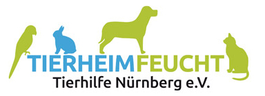

Tanja Weiher Bewerbung
- Bewerbung als Bürokraft (m/w/d)
- Vollzeit beim Tierheim Feucht – Tierhilfe Nürnberg e.V.
- Arbeitszeit: Mo–Fr, 8:00 – 16:30 Uhr

Kurz zu mir
Was ich bereits mitbringe
- Ausbildung zur Bürokauffrau
- Seit Jahren im Rechnungswesen und in der Büroorganisation tätig
- E-Mails, Schriftverkehr und Telefonate zuverlässig im Griff
- Sicherer Umgang mit MS Office und digitalen Kommunikationsmitteln
- Freundliches, sicheres und einfühlsames Auftreten
Warum diese Stelle?
Weil meine Arbeit hier etwas bewirkt.
- Ich möchte meine kaufmännische Erfahrung dort einsetzen, wo sie am Ende den Tieren zugutekommt.
- Abwechslungsreiche Aufgaben von der Korrespondenz über Spendenaktionen bis zur Verwaltung sprechen mich an.
- Ich arbeite gern selbstständig und strukturiert und bringe Ordnung in den Büroalltag.
- Die klaren Arbeitszeiten von Montag bis Freitag passen sehr gut zu mir.
Warum das Tierheim Feucht?
Ein Tierheim, das von Menschen getragen wird, die sich für Tiere einsetzen.
- Haltung: Das Tierheim erhält keine öffentlichen Gelder und lebt von Mitgliedsbeiträgen, Patenschaften und Spenden.
- Engagement: Vorstand und ehrenamtliche Helferinnen und Helfer arbeiten mit Herzblut und völlig unentgeltlich.
- Vielfalt: Tierrettung, Vermittlung, Jugendgruppe und Spendenaktionen – hier ist immer etwas los.
- Team: Ein engagiertes, hochmotiviertes und kollegiales Team ist mir wichtig.
Was ich einbringen möchte
Meine Stärken für den Büroalltag im Tierheim
- Organisationstalent und eine strukturierte Arbeitsweise
- Sicherer Umgang mit Zahlen, Zahlungseingängen und der Kassenführung – hilfreich bei Spenden, Beiträgen und Patenschaften
- Gute schriftliche und mündliche Ausdrucksfähigkeit im Kontakt mit Behörden, Mitgliedern und Sponsoren
- Selbstständigkeit, Zuverlässigkeit und Diskretion
- Teamfähigkeit, Flexibilität und gern eigene Ideen für Projekte und Öffentlichkeitsarbeit
Was ich von der Stelle erwarte
Mitarbeiten, mitdenken und weiterlernen.
- Abwechslungsreiches und selbstständiges Arbeiten
- Ein kollegiales Miteinander im Team
- Die Möglichkeit, mich weiterzubilden und weiterzuentwickeln
- Langfristig eine verlässliche Unterstützung für das Tierheim Feucht zu werden
Abschluss
Zum Abschluss möchte ich kurz zusammenfassen:
- Ich bringe Struktur, Erfahrung und eine gute Portion Herzblut mit.
- Ich freue mich darauf, das Team des Tierheims Feucht im Büro zu unterstützen.
- Herzlichen Dank für Ihre Zeit und die Aufmerksamkeit für meine Bewerbung.
- Gern lerne ich Sie persönlich kennen – am liebsten bei einem Rundgang durchs Tierheim.